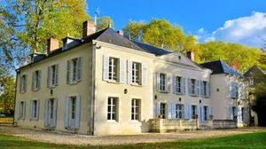
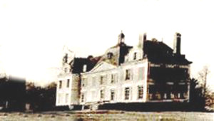
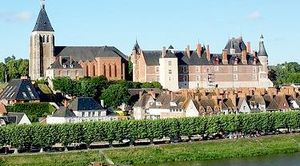
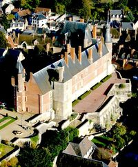
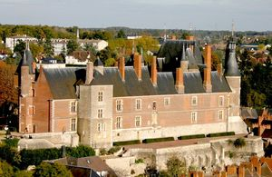
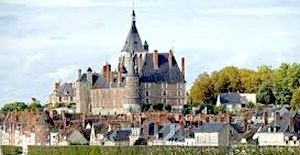
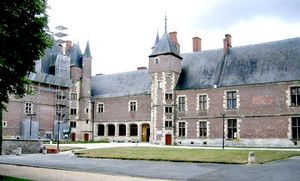
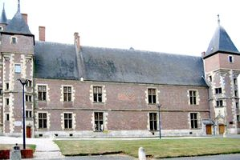
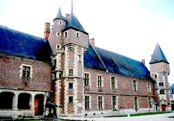

Recensement Jean-Claude Truffet
| Département | 45 — Loiret |
| Canton | Gien |
| Commune | Gien |
| Type d'édifice | Château |
| Période d'origine | XIV-XV-XVI |









GIEN; Le comté de Gien remonte au XIe siècle, Rainaud ancêtre de la lignée épouse en 1015, la fille du roi Robert. Philippe Auguste rattache Gien au domaine royal. En 1307 le château est cédé en apanage par Philippe le Bel à son frère Louis, comte d'Evreux, il revient à la couronne un siècle plus tard. En 1410 le jeune duc d'Orléans s'allie aux ducs de Berry, le château est cédé au comte de Henrichemont connétable de France, puis aux Dunois fidèle compagnon de Jeanne d'Arc , et compta plusieurs propriétaires au Moyen-Age. La fin du XVe siècle le domaine est l'apanage de Pierre de Bourbon. La construction du château pour Anne de Beaujeu comtesse de Gien et fille aînée de Louis XI, marié à quatorze ans, en 1474 au sire de Beaujeu, futur duc Pierre II de Bourbon. Anne à la mort de son père et de son frère elle fut nommée régente du royaume. En 1522 décès d'Anne de Beaujeau. Par trahison du connétable de Bourbon, tous ces biens furent confisqués. François Ier signa l'acte sur lequel y confiait à sa mère Louise de Savoie. Au moment de la Fronde , en 1652, Louis XIV enfant et la reine mère Anne d'Autriche chassé par l'émeute trouvèrent à Gien un asile. Le château passa par la suite à divers propriétaires avant d'être confisqué sous la Révolution, menacé par la" bande noire" il fut sous l'Empire acquis par le département du Loiret. Le château de Gien devient propriété du département en 1823 abritant tour à tour la sous-préfecture, le tribunal et la prison. En 1842, le château est classé M.H., et héberge le musée international de la chasse crée sous l'impulsion d'Henri de Linarès en 1952.
MARCAULT, à Poilly les Gien une seigneurie de Marcault existait déjà aux XVe et XVIe siècles. À la fin du XIXe siècle la propriété a été achetée par une famille originaire de Gien, les Janson de Couët. Elle comportait à l'époque un château du XVIIe siècle en mauvais état, qui a été remplacé en 1910 par le château actuel. L'édifice comprend un corps central à trois travées surmonté d'un toit à l'impériale agrémenté d'un clocheton et des ailes en ressaut. La jeune Bernadette Chaudron de Courcel, future épouse du président Chirac. Suivant la tradition, le parc a été dessiné par Édouard André collaborateur du baron Haussmann, l'entreprise "Guist'hau Concept", actuel propriétaire. GIEN, le château de Gien fut d'abord un édifice médiéval construit à l'emplacement d'un rendez-vous de chasse de 1494 à 1500. Le seul vestige subsistant de cette époque est la tour carrée située sur la façade sud, la Tour "Charlemagne". Le château fut remanié dès la fin du XVIe siècle, le bâtiment hébergea Henri II et Catherine de Médicis, puis Louis XIV et Anne d'Autriche durant la Fronde. L'architecture particulière du château est un exemple de géométrie appliquée comme en témoignent les dessins de façade formés par les briques polychromes, les vastes fenêtres révèlent l'esprit de la première Renaissance française, les tourelles logeant les escaliers à vis. Après avoir reçu les plus grands souverains de notre histoire (François Ier, Louis XIV notamment), .
Anne de Beaujeu Marcault; Bernadette Chaudron de Courcel, Mme Chirac.
"
Deux châteaux à Gien dont Gien grav de 3 à 9 et Marcault grav-1-2. Gien; 47° 41' 06" nord, 2° 37' 54" est